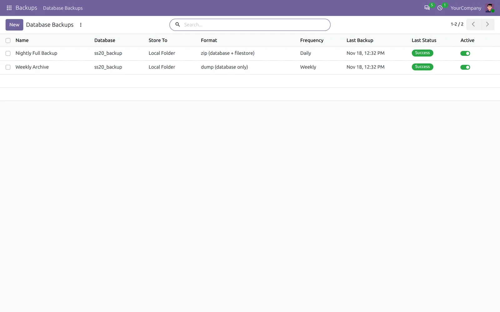

Database Backup - Auto Backup on Schedule with Retention
Automatic database backup on a schedule: keeps the last daily and monthly backups, e-mail on failure, storage add-ons for a local folder or Google Drive.
- Price
- Free
- Odoo versions
- 16.0
- 17.0
- 18.0
- 19.0
- 20.0
- Technical name
tamadoo_database_backup- License
- LGPL-3
Odoo 20.0: not listed on the store yet. Ask at tama.odoo@gmail.com.

Text and screenshots below are from the Odoo 20.0 version of this module.
Scheduled backups with odoo.sh-style retention · pluggable storage.
What it does
A lightweight engine for automatic database backups. Schedule them, keep a sensible history, and get notified when one fails. Where the backups are stored is a separate, small add-on — install only the destinations you use.
- Daily / weekly / monthly schedule.
- zip (database + filestore) or dump (database only).
- odoo.sh-style retention: keep the last N days, plus the latest of each of the last M months.
- E-mail alert on failure.
Pick your storage
This is the engine. Add one or more storage backends:
- Local Folder —
tamadoo_db_backup_local - Google Drive —
tamadoo_db_backup_gdrive
Build your own destination by adding one Selection value and implementing
_store_<backend> / _retain_<backend>.
How it looks
Your scheduled backups at a glance

Configure schedule & retention

Step by step
1. Install the engine and a storage add-on
Install this module together with at least one destination: Tamadoo Database Backup: Local Folder or Tamadoo Database Backup: Google Drive.
2. Create a backup
As an administrator, open Backups → Database Backups and click New. Give it a name and check the Database.
3. Choose what, where and how often
Pick the Format (zip with filestore, or dump), the destination in Store To and the Frequency. Set Keep Daily (days) and Keep Monthly (months), and an e-mail address in Notify On Failure if you want an alert.

4. Run it
Click Back Up Now to test it. After that the daily scheduler runs every backup that is due.
5. Check the result
The list shows Last Backup and Last Status per line. The form lists the stored files under Existing Backups.

Requirements
- Odoo 20 — Community or Enterprise.
pg_dumpon the server (standard with PostgreSQL).
Tamadoo · tama.odoo@gmail.com
Get Database Backup
Odoo 20.0: not listed on the store yet. Ask at tama.odoo@gmail.com.
Questions before buying? Write to tama.odoo@gmail.com.